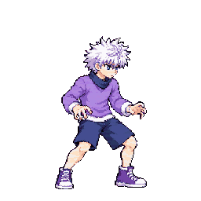
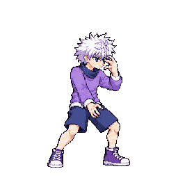
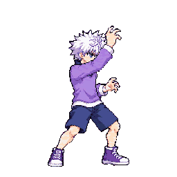
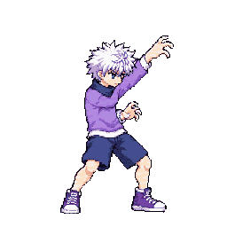
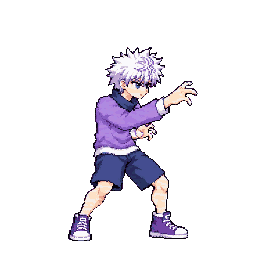
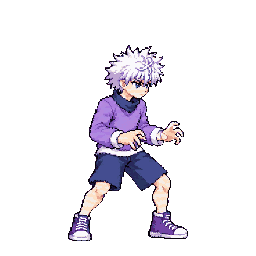
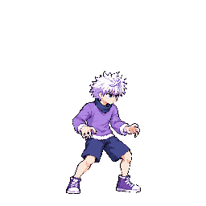
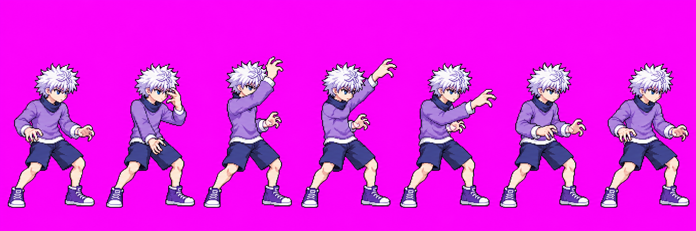
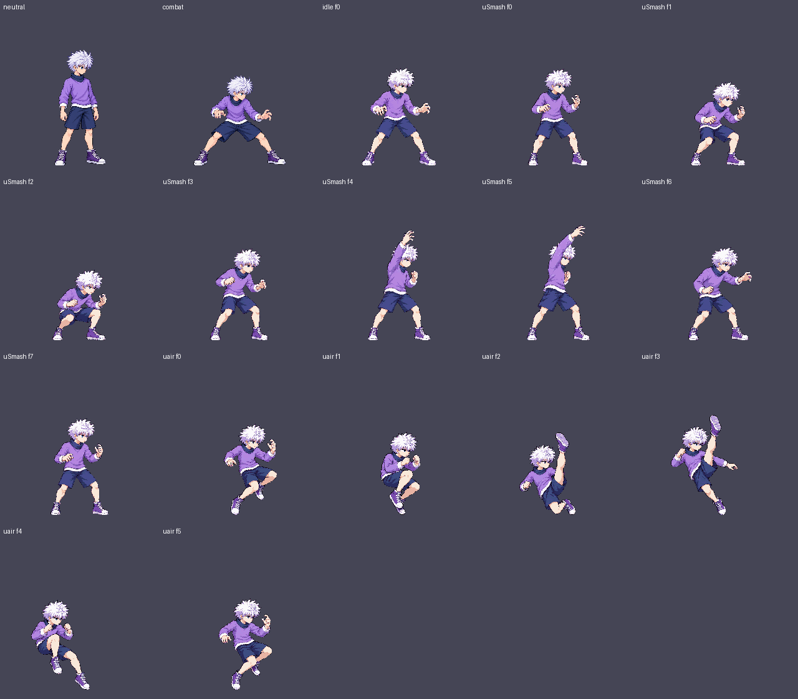

Selected from the one authorized three-call round: attempt 03. It shows seven connected poses and a continuous upward arm arc, with no figure overlap or severed limb visible in the packed cells. Attempt 01 was not retained by the image tool; attempt 02 remains preserved in the branch source records.








The authorized import-fit trial was audited in a quantized whole-character atlas. uSmash v02 used auto-head scale ×0.8613 and the authorized v02 probe exemptions f4/f5; Astra visually passes its size with no conspicuously small body, while retaining segment-measurement uncertainty. uair v02 used auto-head scale ×0.75 (the packer's lower-bound clamp) and its authorized v02 exemptions f2/f3; Astra holds it because the torso, clothing and limbs look compact after fitting (body-sheet B=.74). The fitted uair trial has been returned to _qa_hold; the current pack keeps its stand-in pending your decision. The fitted contact sheet below is audit evidence from that trial, not the current shipped atlas. The full [Astra audit](fit-audit.md) records bounds, measurements, limits and trial atlas hashes.
